Question 1 — Bitmap Images (8 marks)
1 (a) [3 marks]
Draw one line from each image representation term to its correct definition.
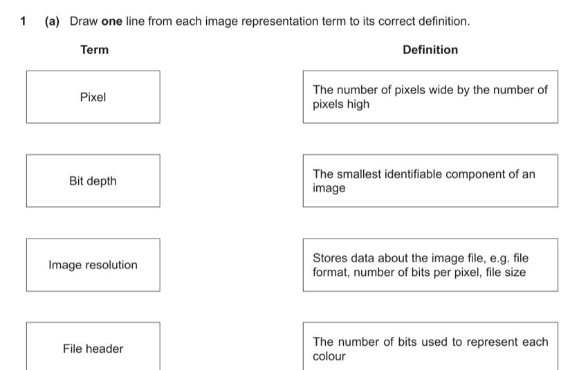
Identify each term carefully:
Pixel → The smallest identifiable component of an image. A pixel is the individual dot that makes up a raster image.
Bit depth → The number of bits used to represent each colour. More bits per pixel means more possible colours (e.g. 8-bit = 256 colours, 24-bit = ~16 million colours).
Image resolution → The number of pixels wide by the number of pixels high. E.g. 1920 × 1080 is the image resolution.
File header → Stores data about the image file, e.g. file format, number of bits per pixel, file size. The header is metadata at the start of the file.
- Pixel ↔ Smallest identifiable component of an image. [1 per correct line; 1 for 1 correct, 2 for 2–3 correct, 3 for all 4 correct]
- Bit depth ↔ Number of bits used to represent each colour.
- Image resolution ↔ Number of pixels wide × pixels high.
- File header ↔ Stores metadata about the image file.
1 (b)(i) [1 mark]
The 10 × 5 pixel bitmap image can have up to 256 colours. Identify the smallest number of bits to represent each colour.
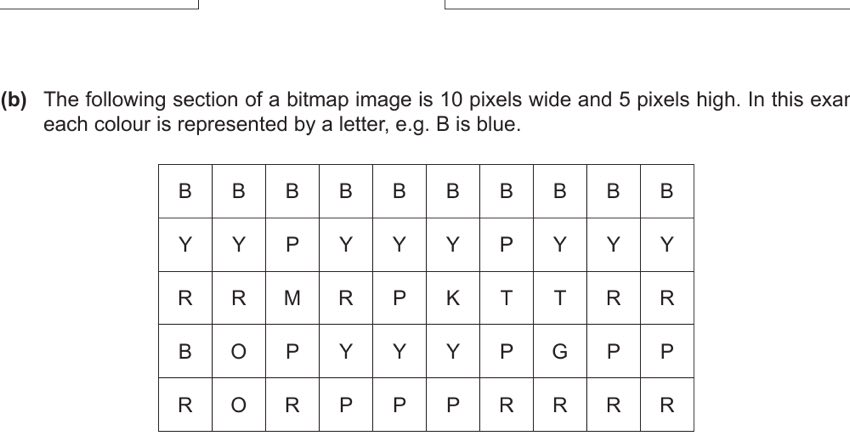
The image can have up to 256 different colours. We need enough bits to represent 256 distinct values. Since 28 = 256, we need exactly 8 bits per colour.
Check: 7 bits gives only 27 = 128 distinct values, which is insufficient for 256 colours. 8 bits gives exactly 256 — perfect.
- 8 [1]
1 (b)(ii) [2 marks]
Calculate an estimate for the file size of the 10 × 5 section of the bitmap image in bytes. Use your answer from (b)(i).
Working:
Number of pixels = 10 (wide) × 5 (high) = 50 pixels
Bits per pixel = 8 (from part b(i))
Total bits = 50 × 8 = 400 bits
Convert to bytes: 400 bits ÷ 8 = 50 bytes
Answer: 50 bytes
- Working: 10 × 5 × 8 ÷ 8 = 50 [1]
- Answer: 50 bytes [1]
1 (c) [2 marks]
Describe how changing the colour depth of an image affects its file size.
Colour depth (bit depth) is the number of bits used to store each pixel. File size is calculated as: width × height × colour depth ÷ 8 bytes.
Increasing colour depth means more bits are used per pixel, so more total data is stored — the file size increases. For example, going from 8-bit (256 colours) to 24-bit (16 million colours) triples the file size.
Decreasing colour depth means fewer bits per pixel — the file size decreases. However, the image may look lower quality with fewer available colours.
- Increasing colour depth increases file size / Decreasing colour depth decreases file size. [1]
- Because more/fewer bits are used per pixel, so more/less data is stored. [1]
1 (d) [2 marks]
The first row of the image is all blue (B): all 10 pixels are the same colour. Explain how this row can be compressed using lossless compression.
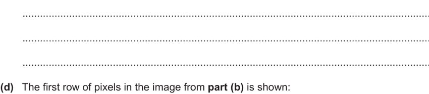
The appropriate lossless technique here is Run-Length Encoding (RLE).
Instead of storing each of the 10 Blue pixels individually (which would require 10 × 8 = 80 bits), RLE replaces consecutive runs of the same value with a pair: (count, value).
For this row: there are 10 consecutive blue pixels, so RLE stores just two values: 10 (count) and Blue/B (colour code).
This reduces the storage for this row from 10 colour codes to just 1 pair — a significant saving when there are long runs of identical colours.
- Use run-length encoding (RLE). [1]
- Record the colour Blue and the number of times it occurs (10). [1]
Question 2 — Embedded Systems & Input Devices (5 marks)
2 (a) [2 marks]
Explain why the car lane detection system is an example of an embedded system.
An embedded system is a dedicated computer system built into a larger device to perform a specific, fixed function.
The lane detection system qualifies because:
1. It is built into / integrated into the car — it is not a general-purpose standalone computer.
2. It performs only one specific task: monitoring lane lines and automatically correcting the car's position. It is not reprogrammed or used for other purposes by the driver.
- The lane detection system is built into / integrated into the car. [1]
- It only performs one specific task / is not easily changed by the car owner. [1]
2 (b) [2 marks]
Identify the data stored in primary and secondary storage for the two mileage features (current journey miles + total miles since build).
Primary storage (RAM): The number of miles travelled in the current journey. This is a temporary value that is actively being updated while the engine is running. It needs fast access but does not need to persist when the engine turns off — it is reset each journey.
Secondary storage (non-volatile, e.g. EEPROM/flash): The total miles the car has travelled since it was built. This must persist permanently even when the engine is off. Every time a journey ends, the current journey miles are added to the running total stored in secondary storage.
- Primary: miles travelled in current journey (temporary, volatile). [1]
- Secondary: total miles since car was built / most recent journey miles after engine off. [1]
2 (c) [1 mark]
Tick one box per row to show whether each statement about a resistive touchscreen is true or false.
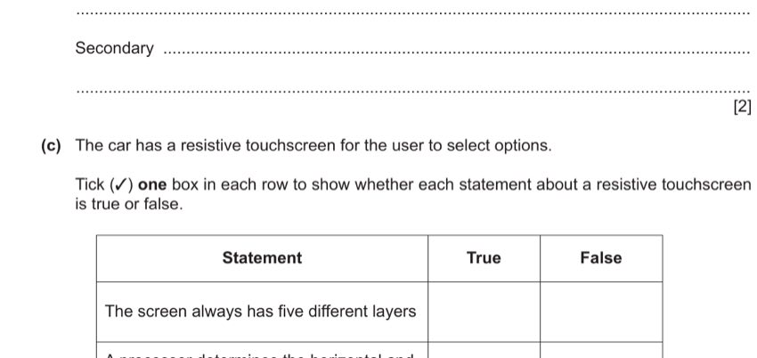
A resistive touchscreen has five layers (two flexible conductive layers separated by air/dots, plus cover, adhesive, and backing). Statement "always has five different layers" — True.
"A processor determines the horizontal and vertical coordinates of the point of contact" — True. When pressure is applied, the two conductive layers touch, and the processor reads the voltage to determine X–Y coordinates.
"The touchscreen will work if any object touches the screen" — True. Unlike capacitive screens, resistive screens respond to any physical pressure (finger, stylus, gloved hand, etc.).
Correct ticks: True / True / True
- All three rows correctly ticked (True / True / True) = 1 mark. [1]
Question 3 — Bit Manipulation & Binary Arithmetic (9 marks)
3 (a) [2 marks]
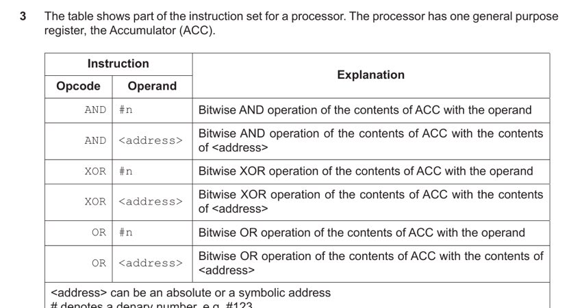
ACC currently contains: 0110 0101. Write the instruction to change it to: 1111 1111
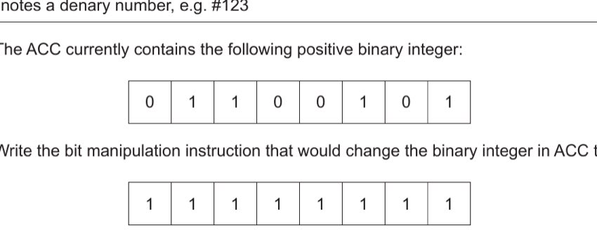
The target pattern is all 1s: 1111 1111. We need an operation that turns every 0 in the ACC into a 1, while keeping existing 1s as 1s.
The OR operation works: x OR 1 = 1 for any x, and x OR 0 = x. So we OR the ACC with a mask of all 1s:
ACC OR 11111111₂ = 11111111₂
In denary, 11111111₂ = 255. So: OR #255
Alternative: We could also XOR with 1001 1010 (the bits that need flipping from 0 to 1), i.e. XOR #154 (154 = 10011010₂). Both are correct.
Answer: Opcode: OR, Operand: #255 (or XOR #154)
- Correct opcode: OR (or XOR). [1]
- Correct operand: #255 (or #154 for XOR). [1]
3 (b) [2 marks]
ACC currently contains: 0110 0101. Write the instruction to change it to: 1001 1010
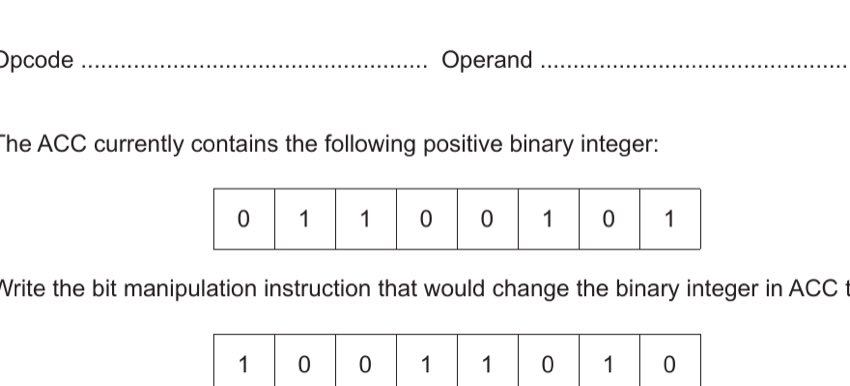
Compare the before and after:
Before: 0 1 1 0 0 1 0 1 After: 1 0 0 1 1 0 1 0
Every single bit is flipped (inverted). This is a bitwise NOT — but the instruction set doesn't have NOT. Instead, XOR with all 1s (11111111₂ = #255) flips every bit:
0110 0101 XOR 1111 1111 = 1001 1010 ✓
Answer: Opcode: XOR, Operand: #255
- Correct opcode: XOR. [1]
- Correct operand: #255. [1]
3 (c) [1 mark]
Convert 0111 1110 into hexadecimal.
Split the 8-bit binary into two 4-bit nibbles:
0111 = 0 + 4 + 2 + 1 = 7
1110 = 8 + 4 + 2 + 0 = 14 = E
Answer: 7E
- 7E [1]
3 (d) [1 mark]
Perform a three-place logical shift to the LEFT on 0111 1110. Show the result.
LSL (Logical Shift Left) by 3: shift all bits left by 3 places, dropping the 3 most significant bits, and padding with 3 zeros on the right:
Original: 0 1 1 1 1 1 1 0 LSL #3: 1 1 1 1 0 0 0 0 (bits 0111 shifted left, 3 zeros added right)
Answer: 1111 0000
- 1111 0000 [1]
3 (e) [3 marks]
Convert 127 and 12 to 8-bit binary. Then perform the subtraction 12 − 127 in binary. Show your working.
Step 1 — Convert to binary:
127 in 8-bit binary: 64+32+16+8+4+2+1 = 0111 1111
12 in 8-bit binary: 8+4 = 0000 1100
Step 2 — Perform 12 − 127 using two's complement:
We compute 12 + (−127). Find two's complement of 127:
Invert 01111111 → 10000000
Add 1: 10000000 + 1 = 10000001 (this is −127 in two's complement)
Step 3 — Add:
0000 1100 (12) + 1000 0001 (−127) ----------- 1000 1101
The carry out from bit 7 is 0 (no overflow of the sign bit set), and the result has the sign bit = 1, indicating a negative number. The result 1000 1101 is the two's complement representation of −115.
Answer: 1000 1101
- Correct binary: 0111 1111 (127) and 0000 1100 (12). [1]
- Working: two's complement of 127 = 1000 0001. [1]
- Answer: 1000 1101. [1]
Question 4 — Data Security (8 marks)
4 (a) [2 marks]
Explain why the school needs to keep both its data and its computer system secure from unauthorised access.
Data: Personal data about staff and students (names, dates of birth, grades etc.) must be protected from unauthorised amendment, deletion, or theft. If stolen or leaked, it could be misused (identity theft, discrimination). If amended, decisions based on wrong data could harm individuals. Schools have legal obligations (e.g. under data protection laws) to keep personal data secure.
Computer system: The computer system must be protected to prevent people from, for example, installing malware or ransomware that could disrupt the school's operations, corrupting or encrypting all data, or using the school's computing resources for malicious purposes.
- Data needs protecting to prevent amending / deleting / taking it. [1]
- Computer system needs protecting to stop people installing malware / damaging the system. [1]
4 (b) [6 marks]
Complete the table: identify two security threats, describe each, and give a different prevention method for each.
| Threat | Description | Prevention method |
|---|---|---|
| Virus | A type of malicious software that replicates itself and can corrupt, delete, or steal data on the computer system. It often spreads through email attachments or infected downloads. | Install and regularly update anti-virus / anti-malware software that scans for and removes viruses. |
| Hacker | An individual who attempts to gain unauthorised access to the school's computer system, potentially to steal, alter, or leak student/staff personal data. | Use a firewall to monitor and filter network traffic, blocking suspicious access attempts. Also use strong, complex passwords or biometric authentication. |
- Threat 1 identified. [1]
- Description matches Threat 1. [1]
- Prevention method for Threat 1. [1]
- Threat 2 identified. [1]
- Description matches Threat 2. [1]
- Prevention method for Threat 2 (different from Threat 1's). [1]
4 (c) [2 marks]
Describe what is meant by encryption and explain why it is used.
Encryption is the process of converting data (plaintext) into an unreadable scrambled form (ciphertext) using an encryption algorithm and a key. Only someone with the correct decryption key can convert it back to readable form.
Why it is used: When data is transmitted over a network (e.g. the internet), it may be intercepted by unauthorised parties. Even if they capture the encrypted data, they cannot understand it without the decryption key — so encryption protects the confidentiality of data in transit.
- Data is turned into ciphertext / encoded / scrambled. [1]
- Used so that it cannot be understood if intercepted without the decryption key. [1]
Question 5 — Database FILMS (17 marks)
Tables: ACTOR(ActorID, FirstName, LastName, DateOfBirth) · FILM_FACT(FilmID, FilmTitle, ReleaseDate, Category) · FILM_ACTOR(ActorID, FilmID)
5 (a) [2 marks]
Complete the entity-relationship (E-R) diagram for the FILMS database.
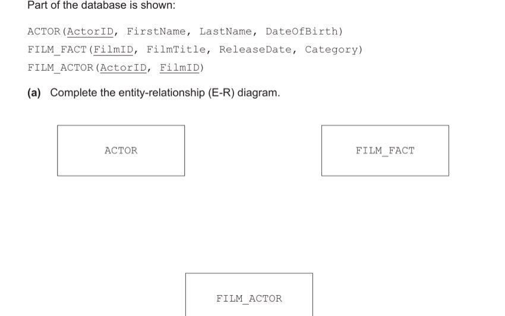
The FILM_ACTOR table links ACTOR and FILM_FACT. Each actor can appear in many films; each film can have many actors. This creates a many-to-many (M:M) relationship between ACTOR and FILM_FACT, resolved by the linking table FILM_ACTOR.
Relationships:
ACTOR — (1) — FILM_ACTOR — (M) — FILM_FACT
Or equivalently: ACTOR has a 1:M relationship with FILM_ACTOR; FILM_FACT has a 1:M relationship with FILM_ACTOR.
The E-R diagram should show "1" and "M" crow's foot or min/max notation on the connecting lines between ACTOR↔FILM_ACTOR and FILM_FACT↔FILM_ACTOR.
- Correct relationship (1:M) between ACTOR and FILM_ACTOR. [1]
- Correct relationship (1:M) between FILM_FACT and FILM_ACTOR. [1]
5 (b) [2 marks]
Explain why FILM_ACTOR has a composite primary key.
FILM_ACTOR records which actor appeared in which film. It has two attributes: ActorID and FilmID.
Why neither alone is a primary key: ActorID alone is not unique in FILM_ACTOR because the same actor can appear in multiple films (so ActorID appears multiple times). Similarly, FilmID alone is not unique because a film has multiple actors.
Why together they form a key: The combination (ActorID, FilmID) is unique — a given actor can only appear in a given film once. Together they uniquely identify each row, making them a composite primary key.
- Neither key uniquely identifies each tuple by itself. [1]
- Together they are unique / an actor cannot appear in the same film twice. [1]
5 (c) [4 marks]
Complete the SQL script to return the IDs of all actors in the film with title 'Cinderella'.
SELECT ..... FROM FILM_ACTOR INNER JOIN ............ ON FILM_FACT.FilmID = ............ WHERE FILM_FACT.FilmTitle = ............;
We need to join FILM_ACTOR with FILM_FACT to be able to filter by film title. The join condition links the FilmID in both tables. We SELECT ActorID, JOIN FILM_FACT, match on FilmID, and filter by title.
SELECT FILM_ACTOR.ActorID FROM FILM_ACTOR INNER JOIN FILM_FACT ON FILM_FACT.FilmID = FILM_ACTOR.FilmID WHERE FILM_FACT.FilmTitle = 'Cinderella';
- SELECT FILM_ACTOR.ActorID [1]
- INNER JOIN FILM_FACT [1]
- ON FILM_FACT.FilmID = FILM_ACTOR.FilmID [1]
- WHERE FILM_FACT.FilmTitle = 'Cinderella' [1]
5 (d) [3 marks]
Write an SQL script to count the number of films released in January 2022.
We need to COUNT films where the ReleaseDate falls in January 2022. Use a WHERE clause with a date range or BETWEEN.
SELECT COUNT(FilmID) FROM FILM_FACT WHERE ReleaseDate >= #01/01/2022# AND ReleaseDate <= #31/01/2022#;
Alternative using BETWEEN:
SELECT COUNT(FilmID) FROM FILM_FACT WHERE ReleaseDate BETWEEN #01/01/2022# AND #31/01/2022#;
- COUNT with correct field name. [1]
- SELECT and FROM statements with correct table name. [1]
- WHERE clause correctly restricting to January 2022. [1]
5 (e) [6 marks]
Complete the description of DBMS features using terms from the given word bank.
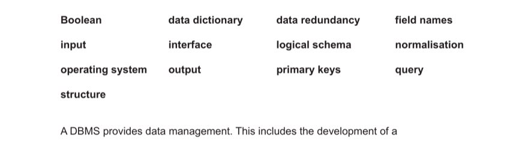
A DBMS provides data management. This includes the development of a data dictionary that stores information about the data stored, such as field names and primary keys.
The logical schema uses methods, such as an E-R diagram, to show the structure of the database and its relationships.
The query processor allows a user to perform searches to find specific data. The DBMS also provides a developer interface that allows the user to create tables, forms and reports.
- data dictionary [1]
- field names [1]
- primary keys [1]
- logical schema [1]
- query [1]
- interface [1]
Question 6 — Language Translators & IDE (8 marks)
6 (a) [2 marks]
Describe the operation of a compiler.
A compiler reads the entire source code of a program and attempts to translate it all into machine code (object code) in one go. If there are any errors, the compiler produces an error report after completing its analysis — the programmer sees all errors at once. If translation is successful (no errors), the compiler produces an independent executable file that can run without the compiler being present. The compiled executable runs faster than interpreted code because translation is done just once.
- Attempts to translate the whole source code at once. [1]
- Creates a separate error report at the end / if no errors, creates an executable file. [1]
6 (b) [2 marks]
Describe the operation of an interpreter.
An interpreter reads and translates the source code one line at a time. It translates each line into machine code and immediately executes it before moving to the next line. If an error is found on any line, the interpreter stops immediately and reports that error — subsequent lines are not reached. The interpreter must be present every time the program runs (there is no separate executable). During development, interpreters make it easy to test partial code or individual sections.
- Reads/translates and executes each line one at a time. [1]
- Stops when an error is encountered / displays errors where it finds them. [1]
6 (c) [4 marks]
Explain how a programmer can make use of a typical IDE when writing and testing a program.
Writing (max 2 marks):
• The IDE provides a code editor where the programmer enters source code. Pretty-printing (syntax highlighting) makes key terms such as keywords and variables visually distinct.
• Context-sensitive prompts / autocomplete suggests how to complete a statement as the programmer types, speeding up code entry.
• Dynamic syntax checking underlines or highlights errors in real time as code is typed, allowing immediate correction without needing to run the program.
Testing (max 2 marks):
• Breakpoints allow the programmer to pause execution at a specific line to inspect the state of variables at that point.
• Single stepping executes the program one line at a time, letting the programmer trace through logic step-by-step to find where behaviour diverges from expectations.
• The report window / variable watch shows the current values of variables and data structures at any point during execution.
- Writing: Enter code in editor; pretty printing / syntax highlighting. [1]
- Writing: Context-sensitive prompts / autocomplete / dynamic syntax checking. [1]
- Testing: Single stepping to run line by line / Breakpoints to stop at set lines. [1]
- Testing: Report window to see variable values change. [1]
Question 7 — Truth Table (2 marks)
7 [2 marks]
Complete the truth table for: X = (A XOR B) AND NOT C
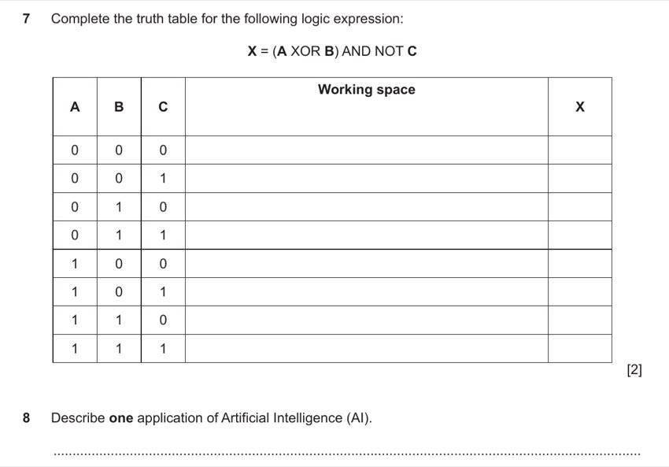
Evaluate step by step for each row:
First: A XOR B → 1 if A ≠ B, else 0. Then: NOT C → 1 if C=0, else 0. Then: (A XOR B) AND NOT C → 1 only when both are 1.
| A | B | C | A XOR B | NOT C | X |
|---|---|---|---|---|---|
| 0 | 0 | 0 | 0 | 1 | 0 |
| 0 | 0 | 1 | 0 | 0 | 0 |
| 0 | 1 | 0 | 1 | 1 | 1 |
| 0 | 1 | 1 | 1 | 0 | 0 |
| 1 | 0 | 0 | 1 | 1 | 1 |
| 1 | 0 | 1 | 1 | 0 | 0 |
| 1 | 1 | 0 | 0 | 1 | 0 |
| 1 | 1 | 1 | 0 | 0 | 0 |
- First 4 rows correct (0,0,1,0). [1]
- Second 4 rows correct (1,0,0,0). [1]
Question 8 — Artificial Intelligence (3 marks)
8 [3 marks]
Describe one application of Artificial Intelligence (AI).
Application: Self-driving (autonomous) cars
Self-driving cars use AI to process sensor data (cameras, lidar, radar) in real time. The AI system uses machine learning algorithms trained on millions of driving scenarios to:
• Detect its position on the road and within surrounding traffic.
• Identify other vehicles, pedestrians, road markings, and traffic signals.
• Follow a planned route while performing collision avoidance, lane-keeping, and self-parking.
The AI continuously updates its decisions based on new sensor input, allowing the car to operate without human intervention.
(Other valid applications include: facial recognition for police identification; natural language interfaces / speech recognition systems; game-playing programs.)
- One application identified (e.g. self-driving cars / facial recognition / speech recognition). [1]
- Relevant description point 1. [1]
- Relevant description point 2. [1]
Question 9 — Networking (11 marks)
9 (a) [4 marks]
Complete the table of network devices and their descriptions.
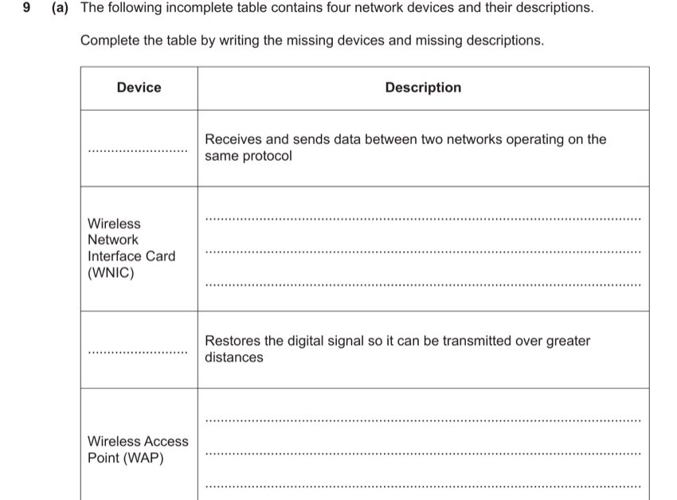
Working through each missing entry:
Missing device 1 (receives and sends data between two networks on the same protocol): Router. A router operates at Layer 3 (network layer) and forwards packets between networks using IP addresses.
Wireless Network Interface Card (WNIC) — missing description: Hardware component that allows a device to connect to a wireless network; provides the device with a MAC address to identify it on the network.
Missing device 2 (restores the digital signal so it can be transmitted over greater distances): Repeater. A repeater amplifies/regenerates weakened signals to extend transmission range.
Wireless Access Point (WAP) — missing description: Hardware component that provides radio communication from the central device (router/switch) to wireless nodes on the network.
- Router [1]
- WNIC description: allows device to connect to wireless network / provides MAC address. [1]
- Repeater [1]
- WAP description: provides radio communication from central device to wireless nodes. [1]
9 (b) [3 marks]
Describe three differences between fibre-optic cables and copper cables.
1. Transmission medium: Fibre-optic cables transmit data as pulses of light, whereas copper cables transmit data as electrical signals.
2. Bandwidth / speed: Fibre-optic cables have significantly higher bandwidth and transmission rates than copper cables, supporting much faster data transfer (e.g. gigabits vs megabits per second for standard copper).
3. Distance / attenuation: Fibre-optic cables can transmit data over much longer distances before needing a repeater, because light experiences less attenuation than electrical signals in copper. Copper cables are more susceptible to signal degradation over distance.
(Other valid differences: fibre is less susceptible to electromagnetic interference/noise; fibre is harder to tap/intercept than copper; fibre is physically more fragile/brittle than copper.)
- Fibre uses light; copper uses electrical signals. [1]
- Fibre has higher bandwidth / transmission rate than copper. [1]
- Fibre can be used over longer distances before repeaters are needed. [1]
9 (c) [4 marks]
Describe CSMA/CD (Carrier Sense Multiple Access / Collision Detection) as used in Ethernet.
CSMA/CD is a protocol used in Ethernet bus networks to manage how multiple devices share the same transmission medium:
1. Carrier Sense (CS): Before transmitting, a workstation listens to the channel to check if it is idle (no signal present). If the channel is busy, the device waits.
2. Multiple Access (MA): Because more than one device shares the same physical medium, any device can attempt to transmit when it detects the channel is free.
3. Collision: If two workstations both detect a free channel at the same moment and transmit simultaneously, a collision occurs — the signals interfere with each other.
4. Collision Detection (CD): Both transmitting devices detect the collision. They immediately abort transmission and each send a jamming signal to alert all devices on the network.
5. Back-off: Each device waits a random amount of time (back-off period) before attempting to retransmit. The random wait reduces the chance of another collision.
- Device listens to channel; data only sent when channel is free. [1]
- More than one computer connected to the same medium — two may transmit simultaneously causing a collision. [1]
- If a collision is detected, transmission is aborted / jamming signal sent. [1]
- Each device waits a random time before attempting to retransmit. [1]